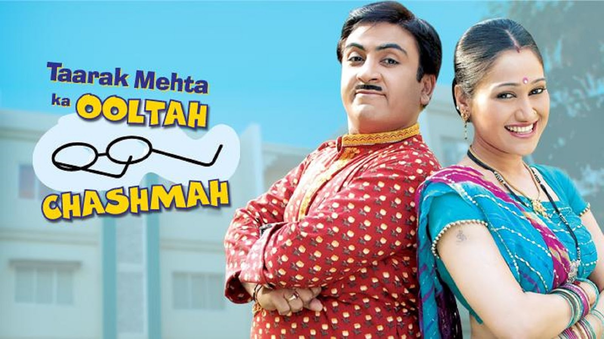
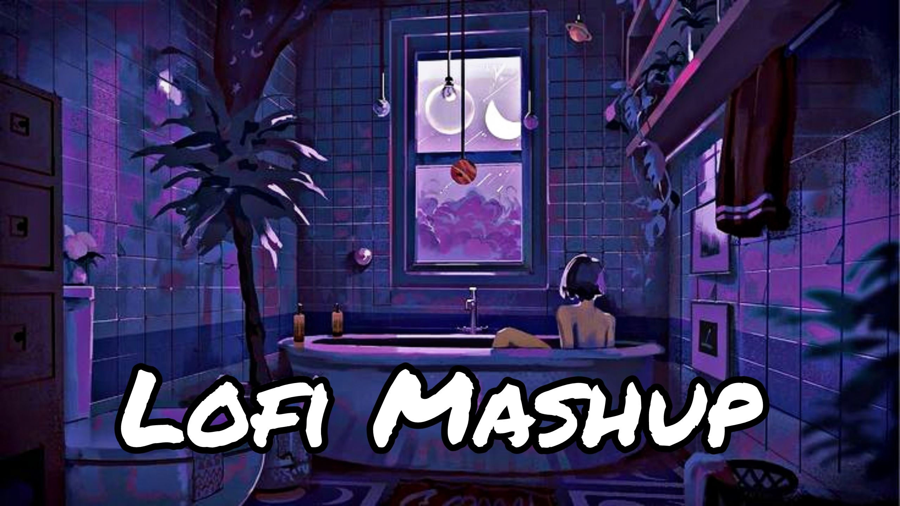
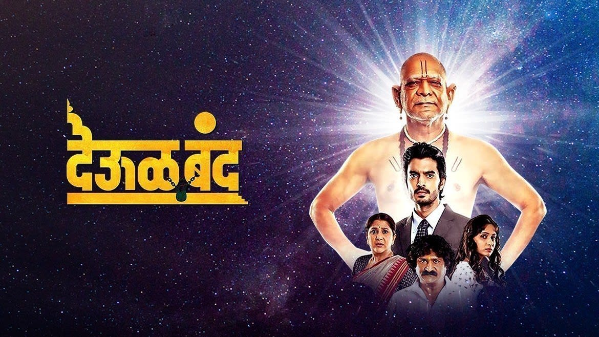
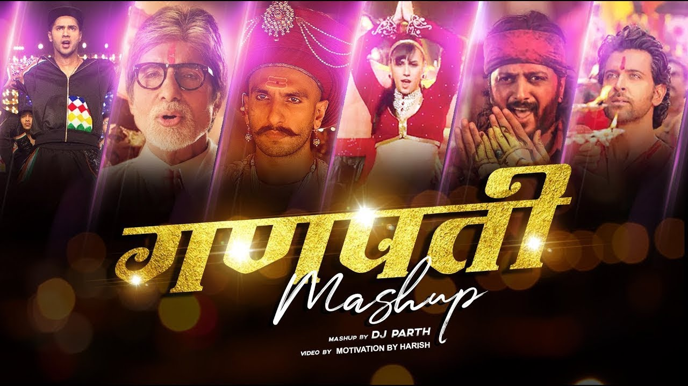

iQOO Neo 9 Pro VS Poco 🔥कोण आहे 2024 चा बेस्ट Flagship Killer..?
Trakin Tech Marathi 1.3M Views ● 5 Months Ago

Learn C++ Programming from Scratch and Master the concepts of Object Oriented Programming
Road To Code 1.5M Views ● 3 Months Ago

Taarak Mehta Ka Ooltah Chashmah - Full Episode 1319 - 16th July, 2018
Sony PAL 31M Views ● 5 Years Ago
Introduction to Python Course | Python for beginners
Jenny's Lectures CS IT 615k Views ● 1 Year Ago

Mind Relax Lofi Mashup | Mind Relaxing Songs | Slowed And Reverb | Lofi Songs
ɴɪᴛɪɴ_ᴛᴏᴍᴜ_ᴘᴀʏᴀ 8.6M Views ● 4 Month AgoTom and Jerry Singapore Full Episodes | Cartoon Network Asia |
WB Kids 28M Views ● 1 Months Ago

Deool Band - Marathi Movie - Mohan Joshi, Nivedita Saraf, Gashmeer Mahajani, Girija Joshi
Zee Movies Marathi 5.8M Views ● 7 Months Ago

Ganpati Mashup | Visual Galaxy | Ganesha Mashup | Festival Mashup 2022 | Dance Mashup |
Prajyot Raut 1.9M Views ● 1 Year Ago
Maharashtra Budget Session 2024 | अर्थसंकल्पीय अधिवेशनातून अर्थमंत्री अजित पवार LIVE | tv9 Marathi
TV9 Marathi 8.3k Watching ● Live